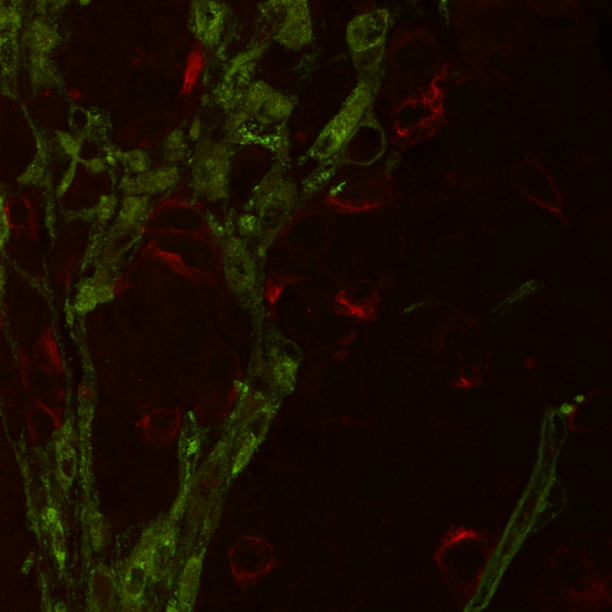

Vähi molekulaarsed alused
Onkobioloogia loengukursuse materjalid.
See on Tallinna Tehnikaülikooli geenitehnoloogia magistri õppekava Onkobioloogia loengu kodulehekülg.
Siia on koondatud viited kõikide loengute slaididele. Samad viited on olemas ka iga loengu slaidide lõpus.
Loeng põhineb Robert A. Weinbergi õpikul The Biology of Cancer. Raamat on olemas ka TTÜ raamatukogus.
Taavi Päll, PhD
TTÜ loodusteaduskond, keemia ja biotehnoloogia instituut
Slaidid (uuenevad vähemalt korra aastas)
- Sissejuhatus
Mis on vähk. Vähi haigestumus ja suremus maailmas. Vähitüübid
- Onkoviirused Viiruste roll vähitekkes inimesel ja teistel selgroogsetel. Väikeste retroviiruste roll vähitekke molekulaarsete mehhanismide mõistmisel. Inimese tuumorviirused.
- Onkogeenid Kartsinogeenid. Raku kasvukontrolli geenide mutatsioonid. Protoonkogeenide aktivatsiooni mehhanismid.
- Kasvufaktorid, retseptorid ja vähk Rakkude jagunemine ja rakuvälised signaalid. Türosiinkinaasid (TK). TK retseptorid ja nende aktivatsioon. Ras. TK retseptorite mutatsioonid vähis. Rakuväline maatriks.
- Rakusisesed signaalirajad Rakuväliste signaalide jõudmine tuuma. Signaaliradade toimimise biokeemiline alus.
- Tuumorsupressorgeenid Vähi intsidentsi seose vanusega. Retinoblastoom (RB). Tuumorsupressorgeenide väljalülitumise mehhanismid.
- Rakutsükli kontroll Rakkude jagunemine ja rakuvälised signaalid. Rakutsükli faasid. Kontrollpunktid. G1 restriktsioonipunkt. Tsükliinid ja tsükliinkinaasid (CDK). CDK inhibiitorid. RB ja E2F valgud rakutsükli kontrollis.
- p53 ja apoptoos p53 valgu avastamine. p53 mutatsioonid. p53 roll raku stressis. p53 regulatsioon. Apoptoos.
- Rakkude vananemine ja immortaliseerumine Stress ja senesents. Telomeerid. Telomeeride roll rakkude jagunemispotentsiaali määramisel.
- Mitmeastmeline vähiteke Vähitekke pikaajalisus. Juhtmutatsioonid ja reisijamutatsioonid. Mitmeastmelise kartsinogenees. Vähi klonaalsus. Vähi tüvirakud. Okogeenide koostoime. Mutageenid ja vähi promootorid.
- Genoomi terviklikkuse säilitamine ja vähiteke Tüvirakud kui mutageneesi märklauad. DNA kahjustuste vältimise strateegiad. DNA kahjustused ja reparatsioon.
- Vähi mikrokeskkond, angiogenees ja metastaasid Vähi mikrokeskkond. Heterotüüpne signalisatsioon. Epiteeli mesenhümaalne transformatsioon (EMT). Vähi angiogeneesi paradigma. Metastaseerumise protsess ja etapid. Kolonisatsioon ja metastaaside ebaefektiivsus. Metastaasigeenid. Metastaasimustrid. Metastaaside latentsus.
- Vähi immuunsus ja immuunoteraapia Vähi immuunoseire ja -kujundamine. Immuunpuudulikkus ja vähk. Onkogeenide immunogeensus. Vähi antigeenid. Immunrakud vähi mikrokeskkonnas. Immune checkpoints.
- Vähiravimid Vähitrendid 20. sajandil. Biomarkerid ja molekulaarne profileerimine. Vähiravi strateegiad. Ravimimärklauad. Ravimiklassid. Ravimiresistentsus.
- Kordamisküsimused PDF
Vabandan katkiste pildilinkide pärast. Parandan neid tavaliselt vahetult enne loengut.